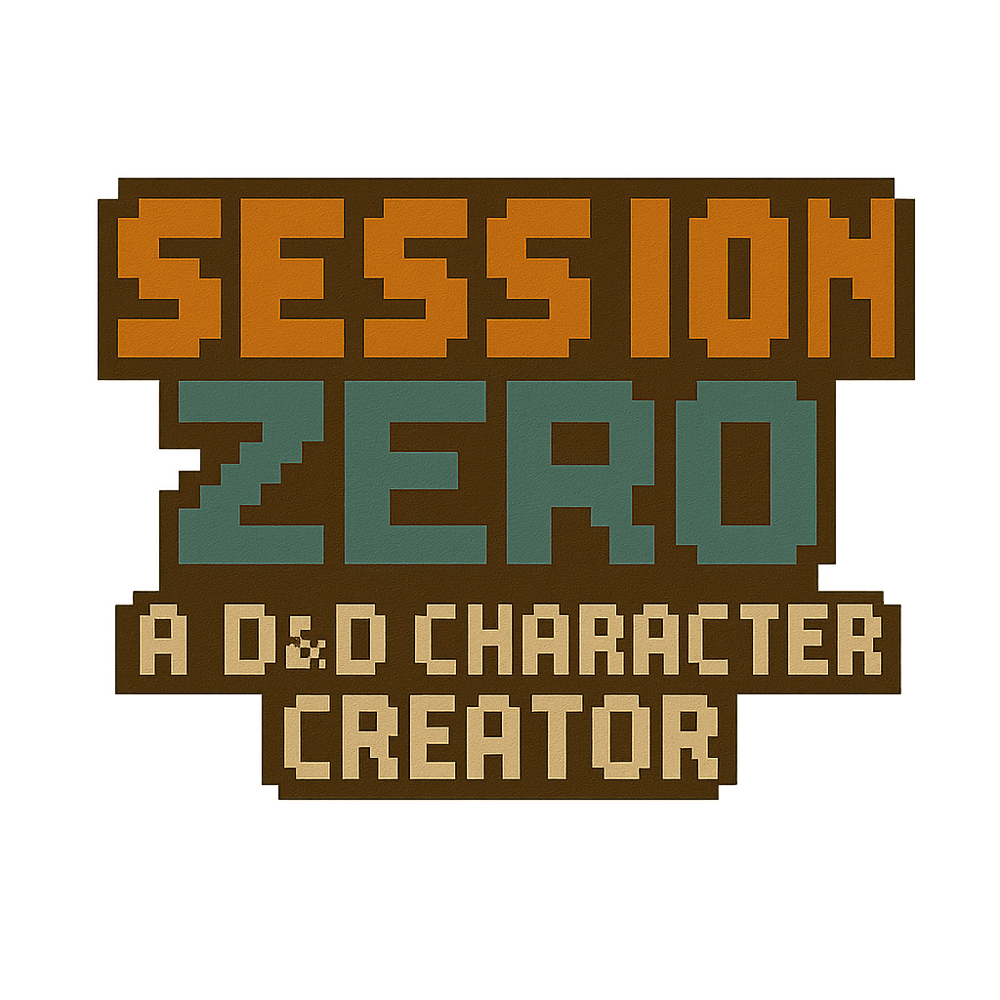
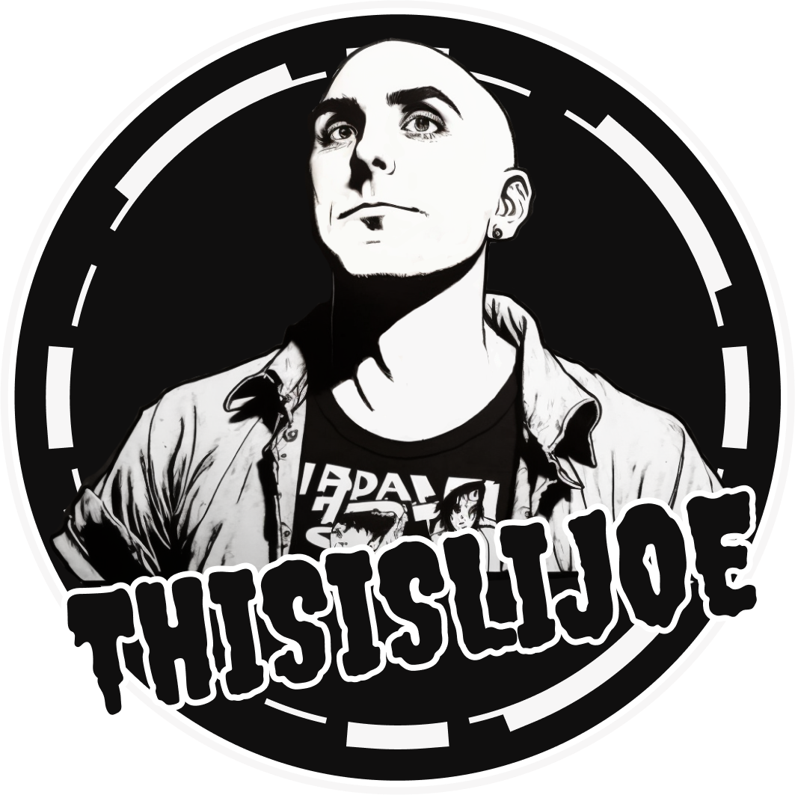

DnD Session Zero
 dnd-session-zero.comIn Dungeon and Dragons terms, 'session zero' implies the part where the player creates their characters. While most D&D players leave this part up to their imagination, others like to have some visual guide to help feed their imaginations. In this application I use AI to help me generate the art style so I can focus on the functionality. It forces me to work heavily with JavaScript.
Youtube - @thisislijoe
 youtube.com/@thisislijoeOne of my closets friends Youtube channels. I helped manage, produce and upload to youtube weekly for a while. Working together with friend was a great experience for me. Together we were able to achieve a lot. While he was the face of the channel I was the behind the scenes (preferably). It gave me the oppurtunity to learn about Youtube'system and more importantly how to expand on tools such as the Adobe Suite (Photoshop / Premiere / After Effects) Most content on his page related to Street Fighter 6 is my handy work.
AI Voice Work
To further exercise my production skills I decided to make a quick video for a role-playing game called Mutant Crawl Classics. I used creative common (CC) footage and art, along with an AI generated voice over to piece these together. Sadly it never went anywhere but this was only for practice and to earn some more experience with AI tools.